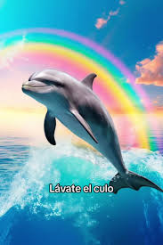
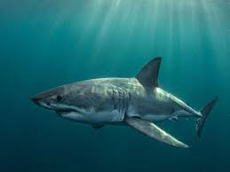

| 1. |
delfín |
mamíferos |
vivíparos |
Estados Unidos, México, Argentina,
Chile, Brasil, España, Australia y Japón. |
 |
| 2. |
Pez erizo |
mamífero |
ovíparo |
Japón, Australia, Hawái, Hawái,
el Golfo de California, el Caribe, Florida,
Brasil, y el Mar
Mediterráneo |
 |
| 3. |
tiburón |
cartilaginosos |
mixtas |
habitan en todos los océanos del mundo,
desde aguas costeras poco profundas hasta
las
profundidades abisales |
 |
| 4 |
tortuga marina |
reptiles |
ovíparos |
México, Costa Rica, Australia,
Estados Unidos, Indonesia y Gabón |
 |
| 5. |
Ballena azul |
mamífero |
vivíparo |
Chile (especialmente Chiloé), Méxicobr
(Pacífico Norte/Baja California),
Canadá.etc |
 |
| 6. |
Pez Payaso |
Pomacentridae |
ovíparos |
en las aguas cálidas de los océanos Índico
y Pacífico, principalmente en arrecifes
de coral
poco profundos y lagunas |
 |